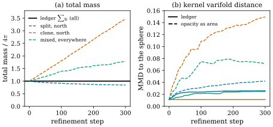

50.3 Refinement Conservation
Goals
- 논문의 Proposition 1(refinement conservation)을 정확히 쓰고 증명하며, 세 가정(mass, barycenter, tangent moment) 가운데 bound (9)가 실제로 쓰는 것이 무엇인지 말할 수 있다.
- 논문이 구현한 conservative split, merge, prune을 식으로 쓰고, 각 연산이 무엇을 정확히 보존하고 무엇을 근사하는지, 그리고 prune의 transport bound (10)을 계산할 수 있다.
- 논문 §7.1이 수치 없이 주장한 “ledger가 opacity-as-area보다 안정하다”를 sphere에서 재현한 실험으로 읽고, ledger가 막는 것(mass의 drift)과 막지 못하는 것(기하의 악화)을 구별할 수 있다.
Prerequisites
- Section 50.2의 Gaussian varifold surrogate(Definition 50.2.1)와 거리 \(\abs{x - y} + \norm{P - Q}_F\)에 대한 Lipschitz 조건(Remark 50.2.4).
- Chapter 46: bounded Lipschitz distance(Definition 46.7.6), opacity가 mass가 아닌 이유(Example 46.8.3, Example 46.8.4), operator norm으로 쓴 같은 명제(Proposition 46.8.5)와 두 연습문제(Exercise 46.8.4, Exercise 46.8.5).
- 3DGS의 split과 clone(Section 29.4).
Motivation
3DGS는 학습하는 동안 Gaussian의 수를 계속 바꾼다. 부족한 곳은 split과 clone으로 늘리고, 투명해진 것은 prune으로 지운다(adaptive density control). 렌더링만 보면 문제가 없다. 다음 iteration의 최적화가 무엇이든 다시 맞추기 때문이다. 그러나 앞 절처럼 Gaussian들을 surface의 넓이를 나눠 가진 원자로 읽으면 사정이 다르다. 같은 surface 조각을 둘로 나눴을 뿐인데 그 조각의 넓이가 바뀌면 안 된다. 논문 §4의 첫 문장이 바로 이것이다. “geometric measure의 관점에서 split은 primitive가 세분되었다는 이유만으로 넓이를 만들어 내면 안 된다.” 이 절은 그 요구를 식으로 쓴 Proposition 1과, 그것을 지키도록 만든 세 연산(split, merge, prune)을 본다. 마지막으로 논문이 수치 없이 넘어간 비교를 직접 해 본다.
Refinement Without a Ledger
3DGS의 세 연산을 다시 보자 [Kerbl23]. clone은 Gaussian을 그대로 복사한다. split은 부모를 지우고, 부모의 distribution \(\mathcal{N}(\mu, \Sigma)\)에서 위치 둘을 뽑아 scale을 \(1.6\)으로 나눈 자식 둘을 둔다. opacity와 rotation은 부모의 것을 물려받는다(Section 29.4). prune은 opacity가 threshold보다 작은 Gaussian을 그냥 지운다.
Gaussian 하나의 넓이를 opacity와 ellipse의 넓이로 셈한다고 하자(“opacity as area”, 예를 들어 \(\alpha s_1s_2\)). 그러면 clone 한 번에 그 Gaussian의 넓이가 \(2\)배가 되고, split 한 번에 \(2/1.6^2 = 0.78\)배가 되며, prune은 지운 만큼 넓이를 잃는다(Example 46.8.3, Example 46.8.4). 위치도 그렇다. split의 두 자식은 \(\mathcal{N}(\mu, \Sigma)\)에서 뽑으므로 barycenter가 기댓값으로는 \(\mu\)이지만, 한 번 뽑은 두 점의 barycenter는 \(\mu\)에서 벗어난다. densification은 학습 중에 수천 번 일어나므로 이런 오차가 쌓인다. 논문이 원하는 것은 이 bookkeeping을 매번 정확히 맞추는 것이다.
Refinement Conservation
원자 하나 \((\mu_i, P_i, q_i)\)를 자식 원자 \((\mu_j, P_j, q_j)\)로 바꾸는 것을 refinement라 하자. 논문의 Proposition 1은 refinement가 보존하면 좋은 세 양을 mass(0차 moment), 위치의 1차 moment, plane의 moment로 정하고, 그중 앞의 둘을 가정하면 varifold가 얼마나 바뀌는지를 bound한다. Chapter 46에서 operator norm으로 미리 본 명제(Proposition 46.8.5)를 논문의 Frobenius norm과 기호로 다시 쓰고, 논문의 부록이 적지 않은 부분을 채운다.
Proposition 50.3.1 (refinement conservation) [ManifoldGS26, Prop. 1, (8)–(9), App. A.2 (17)–(18)]. 부모 원자 \((\mu_i, P_i, q_i)\)를 자식 \((\mu_j, P_j, q_j)\)(\(q_j \gt 0\))로 바꾸되
라 하자(논문의 식 (8)).
- (a) mass(0차 moment)과 위치의 1차 moment가 보존된다.
- (b) 추가로 \(\sum_jq_jP_j = q_iP_i\)이면 plane의 moment(tangent projector moment)도 보존된다.
- (c) 거리 \(\abs{x - y} + \norm{P - Q}_F\)에 대해 Lipschitz 상수가 \(1\) 이하인 모든 \(\varphi\)에 대해, 국소 변화 \(\Delta_i(\varphi)\)가
를 만족한다(논문의 식 (9)).
Proof. (a)와 (b)는 가정을 읽은 것이다. (c)는 \(\sum_jq_j = q_i\)를 써서 \(q_i\varphi(\mu_i, P_i)\)를 \(\sum_jq_j\varphi(\mu_i, P_i)\)로 바꾸면
이다(논문의 식 (18)). 부등호는 \(q_j \gt 0\)과 Lipschitz 조건이다.
쉬운 말로 하면 이렇다. 자식들의 mass 합이 부모의 mass와 같으면, varifold가 바뀌는 양은 “자식이 부모에서 얼마나 떨어졌는가(위치와 plane)”를 mass로 가중해 더한 것 이하다. 자식들이 부모 주위 반지름 \(r\) 안에 있고 plane을 물려받으면 오른쪽은 \(q_ir\) 이하다. 논문 §1이 “제어된 cell 지름 항까지 보존한다”고 한 것이 이 \(q_ir\)이다. bound는 더 줄일 수 없다. 부모 원자까지의 거리 \(\varphi(x, P) = \abs{x - \mu_i} + \norm{P - P_i}_F\)는 Lipschitz 상수가 \(1\)이고 부모에서 \(0\)이므로 등호를 준다. 논문의 기호 \(\Delta_i(\varphi)\)는 부모 \(i\) 하나와 test function 하나에 대한 변화이고, Chapter 46의 거리 \(\Delta^{1,1}\)과는 다른 것이다.
부모 하나에 대한 bound를 장면 전체로 옮기는 것은 한 줄이다. 논문 부록은 이것을 “모든 refined parent에 대해 더하면 전역 bounded-Lipschitz perturbation bound가 된다”는 문장으로만 적는다. 식으로 쓰면 다음과 같다.
Corollary 50.3.2 (global bounded Lipschitz perturbation) [ManifoldGS26, App. A.2]. refinement 한 단계가 서로 다른 부모들의 집합 \(\mathcal{P}\)의 각 \(i\)를 자식 \(\operatorname{ch}(i)\)로 바꾸고 나머지 원자는 그대로 둔다고 하자. 각 \(i\)가 (50.3.1)을 만족하면, 바꾸기 전과 후의 Gaussian varifold \(V_{\text{before}}, V_{\text{after}}\)는
를 만족한다. 여러 단계를 거치면 \(\Delta^{1,1}(V_T, V_0) \le c_1 + \cdots + c_T\)이다.
Proof. 바뀌지 않은 원자는 \(V_{\text{after}}(\varphi) - V_{\text{before}}(\varphi)\)에서 지워지고, 남는 것은 부모마다의 차이의 합이다. triangle inequality와 (50.3.2)로 \(\abs{V_{\text{after}}(\varphi) - V_{\text{before}}(\varphi)} \le c\)이고, Definition 46.7.6의 sup을 잡으면 된다. 단계를 이어 붙이는 것은 \(\Delta^{1,1}\)의 triangle inequality다.
논문이 기여 2에서 말한 “bounded-Lipschitz distance에서의 안정성 진술”이 이 따름정리다. 저자는 이 명제가 “의도적으로 조건부”라고 쓴다. 임의의 3DGS 최적화가 surface를 복원한다는 말이 아니라, adaptive Gaussian 방법이 refinement를 거쳐도 기하가 의미를 가지려면 무엇을 보존해야 하는지를 말한다는 것이다. 그리고 저장소는 이것을 명시적인 geometric mass ledger, 진단용 projection, patch 추출, 보수적인 asset export로 구현한다고 적는다.
Remark 50.3.3 (what each hypothesis is for). Proposition 50.3.1의 세 가정은 하는 일이 다르다(우리의 정리. Proposition 46.8.5 다음의 설명과 같다).
- mass. bound (50.3.2)가 쓰는 가정은 이것뿐이다. 증명에서 \(q_i = \sum_jq_j\)만 썼다.
- barycenter. 위치의 1차 moment는 (c)에 쓰이지 않는다. 그 효과는 smooth test function에서 나온다. \(\varphi\)가 \(x\)에 대해 affine이고 plane을 물려받으면 변화가 정확히 \(0\)이고, \(C^2\)이면 변화가 \(\tfrac12\norm{\nabla_x^2\varphi}\sum_jq_j\abs{\mu_j - \mu_i}^2\) 이하인 2차 양이 된다(Exercise 46.8.5). Figure 50.2.1에서 smooth test function이 \(h^2\)를 본 것과 같은 이유다.
- plane의 moment. \(q_j \gt 0\)이면 \(\sum_jq_jP_j = q_iP_i\)는 “모든 자식이 부모의 plane을 그대로 물려받는다(\(P_j = P_i\))”와 동치다(Exercise 46.8.4). 평균을 맞추는 약한 조건처럼 보이지만 실제로는 상속 조건이다.
Chapter 46은 같은 명제를 operator norm \(\norm{P_j - P_i}\)로 썼다. 두 plane의 차이에서 \(\norm{\cdot}_F = \sqrt2\norm{\cdot}\)이므로 논문의 판(Frobenius)은 plane 항이 \(\sqrt2\)배 크고, 둘 다 성립한다. plane을 물려받으면 이 항은 어느 쪽이든 \(0\)이다.
Split, Merge and Prune with a Ledger
논문은 구현한 세 연산을 한 문단의 말로 설명한다. split은 “자식의 offset을 recenter하고 부모의 tangent를 물려준다. 그래서 mass, barycenter, 상속된 tangent의 moment가 결정론적으로 보존된다.” merge는 “mass와 barycenter를 보존하고, tangent moment는 자식들의 tangent가 같을 때만 보존한다.” prune은 “가장 가까운 남은 원자로의 transport로 다룬다.” 이것을 식으로 쓰자. merge의 plane을 어떻게 정하는지는 논문에 없어서, 아래 (b)의 plane은 우리의 선택이다.
Definition 50.3.4 (conservative split, merge, prune) [ManifoldGS26, §4, App. A.2]. 원자는 \((\mu, P, q)\)이다.
- (a) conservative split. 부모 \((\mu, P, q)\), offset \(t_1, \dots, t_m \in \R^3\), 가중치 \(w_j \gt 0\)(\(\sum_jw_j = 1\))에 대해 자식은 \(\big(\mu + t_j - \bar t,\ P,\ w_jq\big)\)이다. 여기서 \(\bar t = \sum_jw_jt_j\)다. clone은 모든 \(t_j = 0\)인 경우다.
- (b) merge. 원자 \((\mu_j, P_j, q_j)\)들을 원자 하나 \((\bar\mu, P, q)\)로 바꾼다. \(q = \sum_jq_j\), \(\bar\mu = \sum_jq_j\mu_j/q\)이고, \(P\)는 \(\bar P = \sum_jq_jP_j/q\)의 큰 eigenvalue 두 개의 eigenspace로의 projection이다.
- (c) prune. 지울 원자의 집합 \(\mathcal{R}\)과, 각 \(i \in \mathcal{R}\)에 배정한 남는 원자 \(a(i) \notin \mathcal{R}\)(가장 가까운 것)에 대해, \(i\)를 지우고 \(q_i\)를 \(q_{a(i)}\)에 더한다.
각 원자의 \(q\)와, 이 연산들이 만든 moment의 변화와 transport 비용의 기록을 mass ledger(질량 장부)라 한다.
(a)의 recentering이 3DGS split과의 차이다. 3DGS가 뽑은 offset을 그대로 쓰면 자식의 barycenter는 \(\mu + \bar t\)이다. 그것을 \(\bar t\)만큼 되돌리면 barycenter가 정확히 \(\mu\)가 된다. 논문이 “결정론적으로”라고 한 것이 이 차이다. 3DGS는 barycenter를 기댓값으로 지키고, ledger는 매번 지킨다. 자식이 plane을 물려받는 것은 3DGS에서도 같다. 자식이 부모의 rotation을 받고 scale을 모두 같은 비로 줄이므로 가장 짧은 축이 그대로이기 때문이다. 따라서 conservative split은 Proposition 50.3.1의 (a), (b)를 모두 만족하고, (50.3.2)의 오른쪽은 \(q\sum_jw_j\abs{t_j - \bar t}\)다.
Figure 50.3.1은 세 연산을 아래 세 예로 그린 것이다. 왼쪽부터 split, merge, prune이다.
![세 패널. (a) split: 회색으로 칠한 큰 타원(부모)과 가운데 검은 X. 오른쪽 위와 아래에 흰 원 두 개와 회색 점선 작은 타원 두 개(3DGS가 뽑은 자식), 그 사이에 회색 X(그 barycenter). 흰 원에서 왼쪽으로 파란 화살표가 나가 파란 점과 파란 실선 타원(ledger의 자식)에 닿는다. 파란 자식 둘은 검은 X를 가운데에 두고 서로 반대편에 있다. 라벨 3DGS(회색)와 ledger(파랑). (b) merge: 위에 검은 선분 두 개를 옆에서 본 모습. 왼쪽은 수평이고 위로 주황 normal 화살표(0°), 오른쪽은 기울어 있고 normal이 30° 기울었다. 아래로 회색 화살표가 내려가 파란 선분(합친 원자)에 닿고, 그 normal은 15° 기울었다. 라벨 merged, normal 15°. (c) prune: 수평선 위에 0과 1에 큰 검은 점, 0.1과 0.9에 작은 주황 원. 주황 화살표가 각각 가까운 검은 점으로 향한다. 검은 점 아래에 0.5 → 0.55, 가운데 위에 0.05 each.](figures/fig-50-3-1-ledger-operators.svg)
Example 50.3.5 (one split, with and without recentering). 부모가 \(\mu = 0\), plane \(z = 0\), mass \(q = 1\), scale \(s_1 = 0.3\), \(s_2 = 0.15\)라 하자. 3DGS가 \(\mathcal{N}(0, \Sigma)\)에서 \(t_1 = (0.24, 0.06, 0)\), \(t_2 = (0.12, -0.09, 0)\)을 뽑았다(각각 \((0.8, 0.4)\sigma\), \((0.4, -0.6)\sigma\)). mass를 \(1/2\)씩 주면
- recentering 없이: barycenter가 \(\bar t = (0.18, -0.015, 0)\)으로 \(0.181\) 움직인다. \(\varphi(x) = \inner{b}{x}\)(\(b = \bar t/\abs{\bar t}\))의 변화가 \(0.181\)이고, (50.3.2)의 오른쪽은 \(\tfrac12(\abs{t_1} + \abs{t_2})\) \(= \tfrac12(0.2474 + 0.15)\) \(= 0.199\)이다.
- conservative split: 자식이 \(\pm(0.06, 0.075, 0)\)이고 barycenter는 \(0\)이다. affine test function의 변화는 \(0\)이고, (50.3.2)의 오른쪽은 \(\abs{(0.06, 0.075)} = 0.0960\)이다.
두 경우 모두 plane은 물려받는다. opacity로 넓이를 세면 두 경우 모두 넓이가 \(0.78\)배가 되고, ledger의 mass는 \(1\)이다.
Verification: verify/v-50-3-refinement-conservation.py
merge는 split을 거꾸로 읽은 것이다. 합친 원자를 “부모”로, 합쳐진 원자들을 “자식”으로 보면 (50.3.1)이 성립하므로, merge가 varifold를 바꾸는 양도 (50.3.2)의 \(\sum_jq_j(\abs{\mu_j - \bar\mu} + \norm{P_j - P}_F)\) 이하다. 남는 문제는 plane의 moment다. 서로 다른 plane의 평균 \(\bar P\)는 projection이 아니므로(Exercise 46.8.4), 어떤 plane \(P\)를 골라도 \(\sum_jq_jP_j = qP\)를 맞출 수 없다. 논문은 이때 merge가 “정확한 보존이 아니라 controlled approximation”이라고만 쓰고 얼마나 근사인지는 말하지 않는다. 다음 명제가 그 크기다(우리의 분석).
Proposition 50.3.6 (tangent moment defect of a merge). 원자 \((\mu_j, P_j, q_j)\)(\(q_j \gt 0\)), \(q = \sum_jq_j\), \(\bar P = \sum_jq_jP_j/q\)라 하고, \(P\)를 \(\bar P\)의 큰 eigenvalue 두 개의 eigenspace로의 projection이라 하자. \(n_j\)는 \(P_j\)의 unit normal이다.
- (a) \(P\)는 plane 가운데 \(\norm{\bar P - Q}_F\)를 가장 작게 하는 \(Q\)다.
- (b) 모든 unit vector \(n\)에 대해, \(\theta_j\)를 \(n\)과 \(n_j\) 사이의 각이라 하면
- (c) \(D = 0\)일 필요충분조건은 모든 \(P_j\)가 같은 것이다.
Proof. (a) plane \(Q = I - ww^{\mathsf T}\)에 대해 \(\norm{\bar P - Q}_F^2 = \norm{\bar P}_F^2 + 2 - 2\tr(\bar PQ)\)이고 \(\tr(\bar PQ) = \tr\bar P - w^{\mathsf T}\bar Pw = 2 - w^{\mathsf T}\bar Pw\)이다. 그래서 \(w^{\mathsf T}\bar Pw\)를 가장 작게 하는 \(w\), 곧 가장 작은 eigenvalue의 eigenvector를 normal로 고르면 된다. 그것이 \(P\)다.
(b) 각 \(P_j\)의 eigenvalue가 \(0\)과 \(1\)이므로 convex combination \(\bar P\)의 eigenvalue는 \(1 \ge \lambda_1 \ge \lambda_2 \ge \lambda_3 \ge 0\)이고 합이 \(\tr\bar P = 2\)다. \(\bar P - P\)의 eigenvalue는 \(\lambda_1 - 1\), \(\lambda_2 - 1\), \(\lambda_3\)이다. \(a = 1 - \lambda_1\), \(b = 1 - \lambda_2\)는 \(0\) 이상이고 \(a + b = \lambda_3\)이므로 \(a^2 + b^2 \le \lambda_3^2\), 곧 \(\norm{\bar P - P}_F \le \sqrt2\lambda_3\)이다. 그리고
이다. \(\abs{P_jn}^2 = 1 - \inner{n}{n_j}^2\)이기 때문이다. \(D = q\norm{\bar P - P}_F\)이므로 (50.3.5)가 나온다.
(c) \(D = 0\)이면 \(\sum_jq_jP_j = qP\)이고, Exercise 46.8.4에 의해 모든 \(P_j = P\)다. 역은 자명하다.
(b)의 오른쪽은 각 \(\theta_j\)의 제곱이다. 합치는 원자들의 normal이 기준 방향에서 \(\theta\) 정도 퍼져 있으면 plane의 moment의 오차는 \(\theta^2\) 정도다. 한편 (50.3.2)의 plane 항 \(\sum_jq_j\norm{P_j - P}_F\)는 \(\theta\)의 1차다. 이 차이는 barycenter의 경우와 같은 구조다. barycenter를 맞추면 \(x\)에 대해 affine인 test function이 정확해지듯이, \(\bar P\)에 가장 가까운 plane을 고르면 \(P\)에 대해 linear인 test function \(\varphi = \inner{B}{P}_F\)의 오차가 \(\norm{B}_F D\), 곧 2차가 된다. 논문의 “controlled approximation”을 이렇게 정량화할 수 있다.
Example 50.3.7 (merging two tilted atoms). mass \(1\)인 두 원자가 \(\mu_1 = 0\), \(\mu_2 = (0.2, 0, 0)\)에 있고 normal이 \(n_1 = (0, 0, 1)\), \(n_2 = (\sin30^\circ, 0, \cos30^\circ)\)이다. merge는 \(q = 2\), \(\bar\mu = (0.1, 0, 0)\)을 준다. \(\bar P\)의 eigenvalue는 \(1\)(\(y\) 방향), \((1 + \cos30^\circ)/2 = 0.933\), \((1 - \cos30^\circ)/2 = 0.067\)이고, 가장 작은 것의 eigenvector가 두 normal의 이등분선이다. 그래서 합친 plane의 normal은 \(15^\circ\) 기울어 있다. \(\bar P - P\)의 eigenvalue는 \(0, -0.067, 0.067\)이므로 \(D = 2\sqrt2 \cdot 0.067 = 0.1895\)이고, 이것은 이등분선을 \(n\)으로 둔 (50.3.5)의 오른쪽 \(\sqrt2 \cdot 2\sin^215^\circ = 0.1895\)와 같다. varifold 변화의 bound (50.3.2)는 \(2(0.1 + \sqrt2\sin15^\circ)\) \(= 2(0.1 + 0.366) = 0.932\)다.
Verification: verify/v-50-3-refinement-conservation.py
prune은 성격이 다르다. split과 merge는 mass를 한 부모의 둘레에서 다시 나누지만, prune은 원자를 없애고 그 mass를 다른 원자에게 넘긴다. 받는 원자는 제자리에 있으므로 1차 moment가 바뀐다. 논문은 이 변화를 transport 비용으로 bound한다.
Proposition 50.3.8 (prune as transport) [ManifoldGS26, §4 (10), App. A.2 (19)–(20)]. Definition 50.3.4(c)의 prune은 total mass를 보존하고, 1차 moment를
만큼 바꾼다(논문의 식 (19), (10) = (20)). 또 Lipschitz 상수가 \(1\) 이하인 모든 \(\varphi\)에 대해
이다. (50.3.8)은 논문에 없고 우리가 덧붙인 것이다.
Proof. prune 뒤의 measure는 남는 원자들에 \(\sum_{i \in \mathcal{R}}q_i\delta_{(\mu_{a(i)}, P_{a(i)})}\)를 더한 것이다. 그래서 mass는 그대로이고, 1차 moment의 변화는 mass \(q_i\)가 \(\mu_i\)에서 \(\mu_{a(i)}\)로 간 것들의 합인 (50.3.7)의 첫 식이다. 둘째 식은 triangle inequality다. 같은 계산으로 \(V_{\text{after}}(\varphi) - V_{\text{before}}(\varphi)\) \(= \sum_{i \in \mathcal{R}}q_i\big(\varphi(\mu_{a(i)}, P_{a(i)})\) \(- \varphi(\mu_i, P_i)\big)\)이고, 각 항에 Lipschitz 조건을 쓰면 (50.3.8)이다.
(50.3.7)의 오른쪽 \(\sum q_i\abs{\mu_i - \mu_{a(i)}}\)는 “mass \(q_i\)를 거리 \(\abs{\mu_i - \mu_{a(i)}}\)만큼 나른 비용”이다. mass를 나르는 계획 하나의 비용이므로 1-Wasserstein 거리(optimal transport의 최소 비용, [Villani09, Chapter 6])의 upper bound가 된다. 논문이 prune을 “transport”라 부르는 이유다. 배정 \(a(i)\)를 가장 가까운 원자로 고르는 것은 이 비용의 위치 부분을 원자마다 가장 작게 하는 선택이다. 논문의 ledger는 위치 부분만 기록한다. varifold의 bound로 쓰려면 (50.3.8)처럼 plane 부분도 함께 기록해야 한다.
Example 50.3.9 (pruning two atoms, transport against deletion). 직선 위에 mass \(0.5\)인 원자가 \(0\)과 \(1\)에 있고, mass \(0.05\)인 원자가 \(0.1\)과 \(0.9\)에 있다. plane은 모두 같다. 작은 두 원자를 prune하면 각각 \(0\)과 \(1\)로 mass가 가서 남는 mass는 \(0.55, 0.55\)이고 total mass \(1.1\)이 그대로다. 1차 moment의 변화는 \(0.05(0 - 0.1) + 0.05(1 - 0.9) = 0\)이고, bound (50.3.7)은 \(0.05 \cdot 0.1 + 0.05 \cdot 0.1 = 0.01\)이다. 두 이동이 반대 방향이라 서로 지워졌으므로 (10)은 등식이 아니다. varifold의 변화도 (50.3.8)에 의해 \(0.01\) 이하다. 3DGS처럼 그냥 지우면 total mass가 \(1.0\)이 되고, 상수 test function \(\varphi \equiv 1\)이 그 차이 \(0.1\)을 그대로 본다. 지운 원자 근처에 다른 원자가 있으면 transport가 삭제보다 \(10\)배 부드럽다.
Verification: verify/v-50-3-refinement-conservation.py
Does the Ledger Matter?
논문은 이 연산들의 검증을 §7.1의 첫 문단에 적는다. 내용은 셋이다. 첫째, unit test에서 conservative clone과 split이 total mass, barycenter, 상속된 tangent moment를 수치 정밀도까지 보존한다. 둘째, prune은 명시적 ledger로 total mass를 보존하고 transport 비용과 1차 moment의 bound를 기록한다. 셋째, 같은 기하에 서로 다른 refinement schedule을 적용하면 명시적 \(q_i\)로 만든 varifold 진단이 opacity를 넓이로 취급하는 진단보다 안정하다. 저자는 “이 test는 연산자를 검증하는 것이지 복원 품질을 검증하는 것이 아니다”라고 덧붙인다. 앞의 둘은 정의에서 바로 나오는 것이고(Proposition 50.3.1, Proposition 50.3.8), 셋째는 실험의 주장인데 논문에 수치가 없다. 그래서 같은 종류의 비교를 직접 해 보았다. 아래의 수치는 우리의 실험이고 논문의 것이 아니다.
Example 50.3.10 (refinement schedules on the sphere). Example 50.2.5의 \(n_\theta = 8\) tiling(cell 128개)에서 출발한다. cell마다 납작한 Gaussian을 하나 둔다. 중심과 normal은 cell의 원자의 것이고, scale은 \(s_1 = s_2 = \sqrt{A(C_i)/\pi}\), \(s_3 = 0.01\), opacity \(0.7\), mass \(q_i = A(C_i)\)다. 여기에 무작위 refinement를 300번 한다(seed 0). schedule은 셋이다. northern hemisphere(\(z \gt 0\))에서만 split, northern hemisphere에서만 clone, 그리고 전체에서 split과 clone을 반씩이다. split과 clone은 3DGS 규칙을 따르고, 두 가지 장부를 함께 기록한다.
- ledger: Definition 50.3.4(a). split의 두 offset을 recenter하고 자식마다 \(q/2\)와 부모의 plane을 준다. clone은 사본마다 \(q/2\)다.
- opacity as area: Gaussian마다 \(\kappa\alpha s_1s_2\)를 mass로 쓴다. \(\kappa\)는 처음 총합이 \(4\pi\)가 되게 맞춘 상수다.
장면과 sphere의 거리는 Section 50.4에서 정의할 kernel varifold distance(논문의 식 (22))로 잰다. 두 measure를 total mass \(1\)로 정규화하고, kernel \(\exp\big(-\abs{x - y}^2/2\sigma^2 - \norm{P - Q}_F^2/2\tau^2\big)\)의 MMD(maximum mean discrepancy [Gretton12])를 \(\sigma = 0.25\), \(\tau = 1\)(우리의 선택)로 계산한다. sphere 대신 \(n_\theta = 32\)의 tiling(원자 2048개)을 기준으로 쓴다. 300번 뒤 원자는 모두 428개다.
| schedule | area / \(4\pi\) | MMD, ledger | MMD, opacity |
|---|---|---|---|
| split, north | 0.847 | 0.0260 | 0.0422 |
| clone, north | 3.472 | 0.0114 | 0.1494 |
| mixed | 1.799 | 0.0249 | 0.0712 |
“area”는 opacity로 센 총넓이이고, ledger의 total mass는 세 schedule 모두 처음부터 끝까지 정확히 \(4\pi\)다. mixed의 opacity MMD는 도중에 \(0.0790\)까지 올라갔다.
Verification: verify/v-50-3-refinement-conservation.py
Figure 50.3.2가 이 실험의 시간에 따른 변화다. 왼쪽은 total mass, 오른쪽은 sphere까지의 kernel 거리다. 셋을 짚자.
- opacity로 센 넓이는 schedule에 따라 제멋대로 간다. northern hemisphere clone 300번이면 sphere의 넓이가 \(3.47\)배가 되고, split만 하면 \(0.85\)배로 준다. 같은 sphere인데 refinement의 순서가 넓이를 정한다. ledger는 검은 수평선 그대로다.
- 정규화해도 문제는 남는다. MMD는 total mass를 \(1\)로 맞춘 뒤 재므로 넓이의 배율 자체는 보지 않는다. 그런데 northern hemisphere만 clone하면 northern hemisphere의 원자들만 무거워지므로 measure가 북쪽으로 기운다. 그래서 opacity 쪽 MMD가 \(0.0114\)에서 \(0.149\)로 \(13\)배가 된다. ledger에서는 clone이 같은 자리의 원자를 \(q/2\) 둘로 나눌 뿐이라 varifold가 전혀 바뀌지 않는다(초록·주홍 실선이 \(0.0114\)에 머문다). 이것은 (50.3.4)에서 offset이 \(0\)이면 \(c = 0\)인 것과 같다.
- ledger가 기하를 좋게 만들지는 않는다. split이 있는 두 schedule에서는 ledger의 거리도 \(0.0114\)에서 \(0.025\) 정도로 늘었다. 자식이 부모의 tangent plane 위에 놓여 sphere에서 조금 벗어나고, 그 자리의 진짜 tangent가 아니라 부모의 plane을 물려받기 때문이다. Proposition 50.3.1이 허용하는 바로 그 변화다. ledger는 mass의 drift를 막을 뿐, refinement가 sphere에 더 가까워지게 하지는 않는다. 그 일은 이후의 최적화(또는 다음 절의 compatibility 진단)의 몫이다.

Summary
- refinement가 mass와 barycenter를 보존하면((50.3.1)), 한 부모에서 varifold가 바뀌는 양은 \(\sum_jq_j(\abs{\mu_j - \mu_i} + \norm{P_j - P_i}_F)\) 이하이고, 부모들에 대해 더하면 \(\Delta^{1,1}\)의 bound가 된다(Proposition 50.3.1, Corollary 50.3.2). bound가 쓰는 가정은 mass뿐이고, barycenter는 smooth test function에서, plane의 moment는 상속 조건으로 작동한다.
- conservative split은 offset을 recenter하고 plane을 물려주어 셋 모두를 정확히 지킨다. merge는 mass와 barycenter를 지키고, plane의 moment는 근사이며 그 오차는 normal의 퍼짐의 제곱 정도다(Proposition 50.3.6, 우리의 분석). prune은 mass를 가장 가까운 원자로 옮기고, 1차 moment의 변화를 transport 비용 (10)으로 bound한다(Proposition 50.3.8).
- 논문 §7.1은 ledger가 opacity-as-area보다 안정하다고 수치 없이 말한다. sphere에서 재현하면 opacity 넓이는 schedule에 따라 \(0.85\)–\(3.47\)배가 되고 kernel 거리가 최대 \(13\)배 커진다. ledger는 이 drift를 막지만 split 때문에 생기는 기하의 악화는 막지 못한다(Figure 50.3.2).
다음 절에서는 논문의 둘째 아이디어로 간다. Gaussian의 위치와 plane이 어떤 surface와 모순 없이 맞는지(realizability)와 그것이 진짜 surface인지(identifiability)를 나누고, 이 절의 실험에서 쓴 kernel 거리를 정확히 정의한다.
Quick check
Exercise 50.3.1 ★ Gaussian 하나를 같은 자리의 사본 \(k\)개로 clone한다. (a) opacity로 센 넓이 \(\alpha s_1s_2\)의 합과 ledger의 mass의 합은 각각 몇 배가 되는가? (b) ledger의 clone에서 (50.3.2)의 오른쪽은 얼마이고, varifold는 바뀌는가?
Solution
(a) 사본이 모두 같은 \(\alpha, s_1, s_2\)를 가지므로 opacity 넓이는 \(k\)배다. ledger는 사본마다 \(q/k\)를 주므로 합이 \(q\), 곧 \(1\)배다. (b) clone은 offset이 모두 \(0\)이고 plane을 물려받으므로 오른쪽이 \(0\)이다. 실제로 \(\sum_j(q/k)\delta_{(\mu, P)} = q\delta_{(\mu, P)}\)이므로 varifold가 그대로다. Figure 50.3.2(b)에서 northern hemisphere clone의 ledger 선이 평평한 이유다.
Verification: verify/v-50-3-refinement-conservation.py
Exercise 50.3.2 ★ (a) 원자 집합 \(\mathcal{R}\)을 그냥 지우면 \(\Delta^{1,1}(V_{\text{after}}, V_{\text{before}}) = \sum_{i \in \mathcal{R}}q_i\)임을 보여라. (b) transport로 prune하면 \(\Delta^{1,1} \le \sum_{i \in \mathcal{R}}q_i\min(2, d_i)\)임을 보여라. 여기서 \(d_i = \abs{\mu_i - \mu_{a(i)}} + \norm{P_i - P_{a(i)}}_F\)다. mass \(0.05\)인 원자 하나가 가장 가까운 원자에서 \(d = 3\) 떨어져 있으면 어느 쪽이 varifold를 덜 바꾸는가?
Solution
(a) 차이는 \(-\sum_{i \in \mathcal{R}}q_i\varphi(\mu_i, P_i)\)이고 \(\abs{\varphi} \le 1\)이므로 절댓값이 \(\sum q_i\) 이하다. \(\varphi \equiv 1\)이 등호를 준다. (b) 차이는 \(\sum_iq_i\big(\varphi(\mu_{a(i)}, P_{a(i)}) - \varphi(\mu_i, P_i)\big)\)이고, 각 항은 Lipschitz 조건으로 \(q_id_i\) 이하, \(\abs{\varphi} \le 1\)로 \(2q_i\) 이하다. \(d = 3\)이면 transport의 bound는 \(0.05 \cdot 2 = 0.1\)이고 삭제는 정확히 \(0.05\)다. 멀리 떨어진 원자는 지우는 쪽이 varifold를 덜 바꾼다. 그런 원자는 대개 floater이므로 지우는 것이 기하적으로도 맞다.
Verification: verify/v-50-3-refinement-conservation.py
Exercise 50.3.3 ★★ mass \(1\)인 두 원자의 normal이 각 \(\theta\)를 이룬다. merge의 plane moment 오차가 \(D = 2\sqrt2\sin^2(\theta/2)\)임을 보이고, \(\theta = 10^\circ\)에서 \(D\)와 (50.3.2)의 plane 항 \(\sum_jq_j\norm{P_j - P}_F\)를 비교하여라.
Solution
두 normal이 만드는 평면에 수직인 방향에서 \(\bar P\)의 eigenvalue는 \(1\)이다. 그 평면 안에서 \(\tfrac12(n_1n_1^{\mathsf T} + n_2n_2^{\mathsf T})\)의 eigenvalue는 \((1 \pm \cos\theta)/2\)이고, 큰 쪽의 eigenvector가 이등분선 \(m\)이다. 그래서 \(\bar P\)의 eigenvalue는 \(1\), \((1 + \cos\theta)/2\), \((1 - \cos\theta)/2 = \sin^2(\theta/2)\)이고, 가장 작은 것의 eigenvector가 \(m\)이다. \(P = I - mm^{\mathsf T}\)에 대해 \(\bar P - P\)의 eigenvalue는 \(0, -\sin^2(\theta/2), \sin^2(\theta/2)\)이므로 \(D = 2\norm{\bar P - P}_F = 2\sqrt2\sin^2(\theta/2)\)다. \(\theta = 10^\circ\)이면 \(D = 0.0215\)이다. 각 \(P_j\)와 \(P\)의 각은 \(\theta/2\)이므로 plane 항은 \(2\sqrt2\sin5^\circ = 0.2465\)로 \(D\)의 약 \(11\)배다. 비는 \(1/\sin(\theta/2)\)이고 \(\theta\)가 작을수록 커진다. 1차와 2차의 차이다.
Verification: verify/v-50-3-refinement-conservation.py
Exercise 50.3.4 ★★ conservative split에서 자식 둘의 가중치가 \(w\)와 \(1 - w\)이고 offset의 차이가 \(d = t_1 - t_2\)다. recenter한 offset을 구하고, (50.3.2)의 오른쪽이 \(2w(1 - w)q\abs{d}\)임을 보여라. Example 50.3.5의 \(t_1, t_2\)로 \(w = 1/2\)과 \(w = 0.2\)일 때 값을 구하여라.
Solution
\(\bar t = wt_1 + (1 - w)t_2\)이므로 \(t_1 - \bar t = (1 - w)d\), \(t_2 - \bar t = -wd\)다. 오른쪽은 \(wq(1 - w)\abs{d} + (1 - w)qw\abs{d}\) \(= 2w(1 - w)q\abs{d}\)다. \(d = (0.12, 0.15, 0)\), \(\abs{d} = 0.1921\)이므로 \(w = 1/2\)이면 \(0.0960\)(Example 50.3.5와 같다), \(w = 0.2\)이면 \(2 \cdot 0.2 \cdot 0.8 \cdot 0.1921 = 0.0615\)다. 가중치가 치우치면 무거운 자식이 부모 가까이에 남으므로 bound가 작아진다. \(w = 1/2\)이 가장 크다.
Verification: verify/v-50-3-refinement-conservation.py